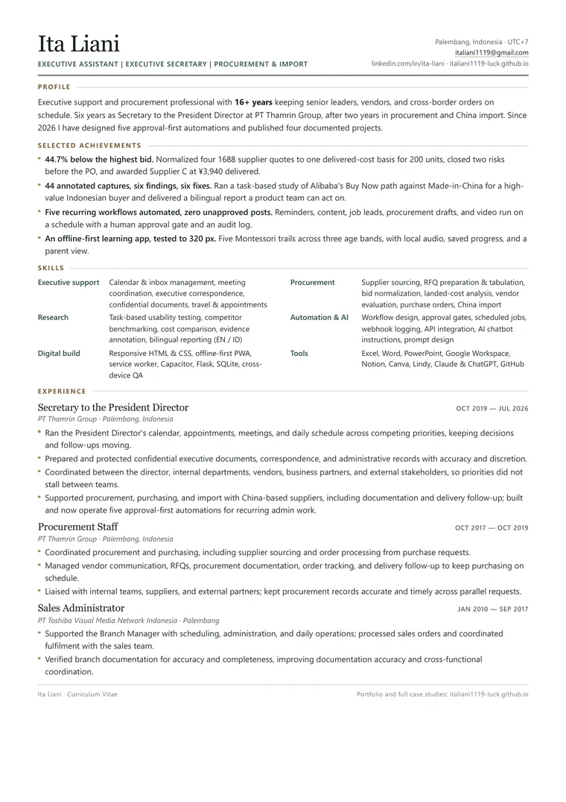

CV · Recruiter edition · Updated October 2026
Sixteen years of follow-through. Now with proof.
The short version: I keep an executive's week honest and a procurement decision defensible. The longer version is below, in the order a hiring manager scans it — the match, the numbers, the work you can open.

01 / The read
What a recruiter needs in thirty seconds.
Most CVs are skimmed before they are read. This page is ordered the way that scan happens: what I do, where I have done it, and what changed in the last year.
01
What I do
I keep the details an executive cannot drop: calendar, correspondence, follow-ups — and the procurement, supplier quotes, and paper trail behind them.
02
Where I have done it
16+ years across three employers. Six years as Secretary to the President Director at PT Thamrin Group, following two years in procurement and China import.
03
What is new
Four 2026 projects: Alibaba research, a four-bid 1688 award, five approval-first automations, and an offline learning app — each documented and public.
The checks a hiring manager runs
Swipe the table sideways to see every column.
| Check | What they are looking for | What this profile shows |
|---|---|---|
| Role match | Title and scope that map to the job | 16+ years across EA, procurement, and sales administration — see the record |
| Tenure and trust | Someone who stays and handles sensitive work | 6+ years with a President Director; 16 years across three employers |
| Outcomes, not duties | Numbers and decisions, not adjectives | 44.7% below the highest bid; 4 bids normalized; 5 workflows; 0 unapproved posts |
| Cross-border work | Supplier and import experience | China suppliers in the current role; Alibaba and 1688 sourcing projects |
| Tools | Software they will not have to teach | Excel and Microsoft Office, Notion, AI assistants, Lindy, Flask, SQLite |
| Proof | Work that can be inspected | Four case studies with screenshots, tables, and the decision behind them — open the proof |
02 / Skills
Grouped the way job ads are written.
Skills are listed under the headings hiring teams actually search for. Items marked New were learned and applied in the 2026 projects below — not coursework.
Executive support
Calendar & inbox management · Meeting coordination · Executive correspondence · Confidential documents · Travel & appointments · Follow-up tracking
Procurement & import
Supplier sourcing · RFQ preparation & tabulationNew · Bid normalizationNew · Landed-cost analysisNew · Vendor evaluation · Purchase orders · China import coordination · Delivery follow-up
Research & analysis
Task-based usability testingNew · Competitor benchmarkingNew · Cost comparison · Evidence annotationNew · Bilingual reporting, EN / IDNew
Automation & AI
Workflow design · Approval gatesNew · Scheduled jobsNew · Webhook loggingNew · API integrationNew · AI chatbot instructions · Prompt & system design
Digital build
Responsive HTML & CSSNew · Offline-first PWANew · Service workerNew · CapacitorNew · FlaskNew · SQLiteNew · Cross-device QANew
Tools & languages
Excel, Word, PowerPoint · Google Workspace · Notion · Canva · Lindy · Claude & ChatGPT · GitHub · Indonesian (native) · English (intermediate) · Chinese (intermediate)
03 / Experience
The same job, written for evidence.
A duty list says what I was responsible for. This is how the same work reads when it has to survive an interview.
Swipe the table sideways to see every column.
| Duty version | What the evidence says |
|---|---|
| Coordinated meetings and follow-ups. | Kept the President Director's week moving across departments, vendors, and partners — with one follow-up list instead of a memory test. |
| Supported procurement and import. | Supported China import activity for the group, then applied the same discipline to a four-bid RFQ awarded 44.7% below the highest bid. |
| Used AI tools. | Built and now operates five approval-first workflows that removed manual logging while keeping a person on every outbound action. |
The record
2026 · Freelance
Research, procurement, and automation projects
Independent · Project-based
- Alibaba conversion study: 44 annotated captures, six findings, six prioritised fixes.
- 1688 RFQ award: four bids normalized, two risks closed, 44.7% below the highest bid.
- Five approval-first workflows and an offline Montessori learning app, both documented publicly.
Oct 2019 — Jul 2026
Secretary to the President Director
PT Thamrin Group · Palembang
- Ran the director's calendar, appointments, and meeting cadence across competing priorities.
- Prepared and protected confidential documents, correspondence, and records.
- Coordinated between the director, departments, vendors, and partners so decisions kept moving.
- Supported procurement and China import activity, including documentation and delivery follow-up.
Oct 2017 — Oct 2019
Procurement Staff
PT Thamrin Group · Palembang
- Sourced suppliers and processed purchase requests from the PO team.
- Managed RFQs, vendor communication, order tracking, and delivery follow-up.
- Kept procurement records accurate and purchasing on schedule across parallel requests.
Jan 2010 — Sep 2017
Sales Administrator
PT Toshiba Visual Media Network Indonesia · Palembang
- Supported the Branch Manager with scheduling, administration, and daily operations.
- Processed sales orders and coordinated fulfilment; verified branch documentation for accuracy.
04 / Proof
Four projects. Every claim traceable.
Each case has the brief, the method, the evidence, and the result. Recruiters can open the screenshots; managers can check the numbers.
The Montessori game is public, not a video of a game: open it, pick an age band, and play a trail without signing in.
05 / Fit
Where this profile fits best.
Being useful is more than being available. Here is where I add value fastest — and where another profile would serve you better.
01
Strong fit
Executive Assistant or Executive Secretary to a C-level leader; Procurement Coordinator or Buyer; Operations and admin lead in a small or growing team.
02
Also a fit
Remote research and sourcing projects; automation operations for an admin-heavy team; project coordination where evidence and follow-up matter.
03
Not the target
Software engineering, data science, or quota-carrying sales roles. I build with AI as a partner, and I say so plainly.
Three questions worth asking in the interview
- 01“Show me a decision you had to defend.” The 1688 award memo: four quotes, two risks, one supplier — and the numbers behind the choice.
- 02“What did you choose not to automate?” Anything that leaves the building. The assistant drafts; a person approves; the log records both.
- 03“How do you keep a director's week honest?” One follow-up list, a morning pass, and reminders that close themselves when the task is done.
Next Work with me
Hiring for the details? I can start now.
Open to remote Executive Assistant, Executive Secretary, Procurement, and Operations Support roles, plus freelance sourcing research. Based in Palembang, Indonesia (UTC+7) — full-time or long-term contract.
Back to the portfolio